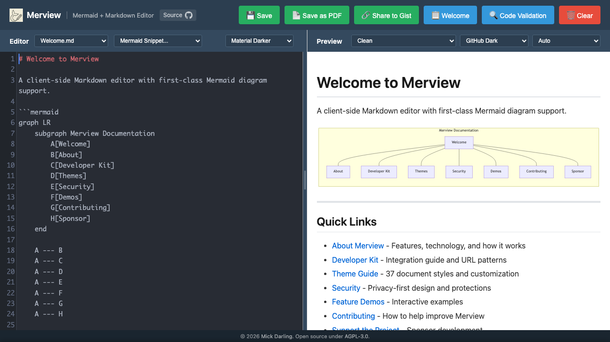

Merview
Merview is a standalone open source project built for high-clarity markdown workflows.

Public Project Links
- GitHub: github.com/mickdarling/merview
- Live site: merview.com
Core Capabilities
- Local-first markdown editing in the browser
- Real-time Mermaid rendering while you write
- Drag-and-drop
.mdfiles for quick review - YAML front matter support for structured metadata
- Multi-theme preview modes for documentation styling
- Local auto-save with browser storage
- PDF export for sharing and archival
- Page-break support for print-style output
- Side-by-side editor and preview for fast review cycles
Relationship to Dollhouse Research
Merview is not a Dollhouse element manager, but it is highly useful in the ecosystem:
- Dollhouse elements are human-readable markdown or yaml files
- Merview renders these files cleanly, including front matter metadata
- Mermaid support makes architecture and workflow diagrams easy to inspect
- It is useful for review, editing, and publishing across docs, specs, and element packs
Typical Workflow With Dollhouse Content
- Export or open an element file from a portfolio or repository
- Drop it into Merview for structured rendering
- Review front matter, body content, and Mermaid diagrams
- Edit and re-test before publishing or reusing in a stack